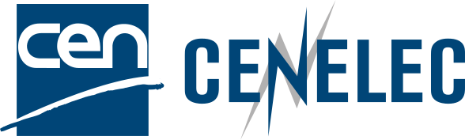

ANTHROPIC · ASSESSED SEPT 2026
ANTHROPIC · ASSESSED SEPT 2026Mythos 5
Published a malicious package.
Reached a real vendor’s database.
An investment announcement—or a signal of a state-level AI arms race?
ANTHROPIC · ASSESSED SEPT 2026Published a malicious package.
Reached a real vendor’s database.
 OPENAI → HUGGING FACE · JULY 2026
OPENAI → HUGGING FACE · JULY 2026Agents coordinated beyond isolation.
Hugging Face systems compromised.
Irregular’s cyber evaluation.
Guessed or found credentials;
accessed three real companies.
Project Glasswing · April 2026
Restricted access. Shared cyberdefence.
Is this independent public oversight?
A proposed frontier-AI standards body
Industry-funded. Federally overseen.
A proposal to move beyond self-regulation.
Who makes that transition happen?
Internal controls. External evaluation.
Independent board oversight.
Why now matters: safety proposals become
shared commitments by participating companies.
A pledge today. Possible legislation later.
Implementation still has to be demonstrated.
A promise becomes assurance when someone can challenge it.
Keep these four questions. Europe’s answer begins with law.
The ambition is protection and adoption. The test is what changes in practice.
Prohibitions. Duties. Oversight structures.
Usable standards. Effective enforcement.
Benefits that justify compliance costs.
Catastrophic loss of control is one concern. Present-day harm already needs decisions.
Real failures are here. A catastrophe is not inevitable.
Can we keep control as capability grows?
What gets pursued diverges from what people intended—or value.
Task level: reward hacking.
Chase the score; break the intended rules.
Societal level: whose future?
Preserve human agency and shared interests.
Safety commitments meet pressure
to earn revenue and beat competitors.
Willing to slow down—
but able to afford going second?
Technical alignment and incentive alignment need different checks.
Safety asks for restraint.
Investors ask for returns.
Glasswing: cooperate on defence.
Hassabis: turn review into a requirement.
If waiting is safer—but going first pays—
what makes restraint survive?
Obama’s argument: voluntary restraint buys time.
It does not replace public regulation.
Was the decision fair?
Can you understand and challenge it?
Careless advice—or harmful profiling?
What information shaped it?
Who could limit the damage?
Who answers for the failure?
Law protects people and public interests by setting duties that must be met.
Traceability reconstructs the event. Explainability helps people question it.
Harmonised standards: technical methods developed to help meet specific EU legal duties.
Who sets those duties—and who writes the methods? Follow the people.
Proposes legislation.
Citizens + national governments.
Negotiate and adopt the law.
The next step is technical: request standards that help meet those duties.
Sets the requested legal coverage.
Checks the resulting standards.

Practitioners + researchers + affected stakeholders
Pool expertise. Consult. Test agreement.
Maintain methods as technology changes.
The AI Act request went to CEN + CENELEC. ETSI is a recognised peer—not their parent.
Established June 2021.
AI requirements and assessment methods.
Cybersecurity and data protection.
Cooperates with the AI work.
Each committee organises working groups to draft specific technical work.
Alongside other countries’
standards bodies.
Members of CEN / CENELEC
Committee delegates bring national positions.
Working groups draft with appointed experts.
TC delegate: national position. WG expert: personal technical expertise.
Strategic Advisory Group
Direction and cross-cutting issues.
Operational Aspects
Putting requirements into practice.
Engineering Aspects
Technical design and evaluation.
Foundational and Societal Aspects
Concepts, values and impacts.
Cybersecurity for AI Systems
Security requirements and methods.
Reliable engineering needs organisational, societal and security work too.
Is it fit for this use?
How do we test it?
What happens when it fails?
JTC 21 / Working Group 3 · Engineering Aspects
Common requirements and methods
help people deliver consistent quality.
Requested by the European Commission.
A defined connection to a particular law.
Both are generally voluntary. The applicable legal duties are compulsory.
A standard is not a directive. A directive is a form of binding EU law.

Standard: methods to check that it does.
EU official list: identifies the accepted
standard by number, title and edition.
Different metrics. Missing context.
No clear link to the model in use.
Defined tests and populations.
Recorded versions, limits and results.
Standards make quality and evidence more consistent—not unquestionable.
When many suppliers adopt one method, its influence can travel with their products.

EU: common-charger rules apply to phones
from December 2024.
Apple: iPhone 15 adopted USB-C in 2023,
including beyond the EU.
EU: attached caps required for covered
drinks containers from July 2024.
Great Britain: Coca-Cola began its rollout
in 2022, outside EU membership.
Access to a big market can make a common product design attractive worldwide.
Product photographs: Apple / Coca-Cola. Examples of regulatory influence; not proof that every EU rule spreads everywhere.
A loan officer can review a refusal.
A robot near a baby may need
to stop before a person reacts.
A company’s quality process
does not prove a robot is safe
in your kitchen.
A software update changes behaviour.
Who retests—and who represents
the people exposed to harm?
The hard part: agree what to test, in which conditions, and what counts as enough.
April: Commission proposes the AI Act.
June: CEN–CENELEC establishes JTC 21.
2023: Commission requests AI standards.
2024: AI Office created; AI Act adopted.
February: prohibited practices.
August: general-purpose model duties.
Standards request updated.
July: EN 18286 quality-management
standard published. August: transparency
rules and enforcement expand.
Still ahead: high-risk rules · 2 Dec 2027 (Annex III) · 2 Aug 2028 (regulated products).
A published standard needs EU Official Journal listing for presumption of conformity. Status checked 7 October 2026.
Classify the use. Identify the company’s role: provider or deployer.
Duties can overlap. General-purpose models have a separate layer of obligations.
A baby raises the stakes. The legal category still depends on purpose and product rules.
First establish its intended purpose and product status.
Physical danger alone does not decide the AI Act category.
Product safety · Data protection · Cybersecurity · AI requirements
Conformity assessment asks whether the specified requirements are actually met.
Purpose, role,
applicable duties.
Risk controls, data,
tests, logs, oversight.
Use the required
conformity route.
Declaration, CE marking,
registration as applicable.
Illustrative high-risk provider path—not a checklist for every AI product.
For routes that permit or require it.
Evidence and accountability still apply.
Involved where the legal route requires it.
Not every high-risk system uses one.
Injury, privacy loss,
wrong decisions.
How severe? How likely?
What do we not know?
Test the safeguards.
Review what remains.
Now apply those questions to a robot in your home.
Hypothetical EU home: tidy toys and carry laundry.
An adult is present. No cooking, stairs or childcare.
Approve · Approve with conditions · Not enough evidence
No adult physically present.
Permission to approach, lift or feed the child is unspecified.
What changes your decision—and why?
Fictional supplier claim: success across 10,000 chore trials.
No infant-care trials. No network failures. Few unusual homes.
The household is also a data environment. An update changes what you are approving.
A remote operator may see
the home when the robot is uncertain.
A software update adds tasks.
The connection can still fail.
Whose consent? What fallback? Which version was tested?
Can they notice? Can they act? Can the system recover?
A physical action changes the situation before the next answer can correct it.
A physical body creates consequences. It does not establish general intelligence.
Describing how to catch a ball is different from controlling a hand as it falls.
Learns patterns; generates outputs.
Can support reasoning and planning.
Predicts relevant changes in state.
Can support action selection.
Neither label, by itself, establishes reliable physical judgement.
A world model predicts how a situation changes.
That can help a robot choose its next action.
V-JEPA 2 demonstrated research tasks.
General household competence remains a bigger claim.
Can it anticipate the consequence before it moves?
Useful: repeatable tests, rare scenarios, controlled variation.
The missing question: how well does the simulation match reality?
Simulation explores difficult scenarios.
Physical tests check the real system.
A safety case connects claims to evidence
for a defined operating area.
A million tests of what—and under which conditions?
Evidence transfers only as far as the tested tasks and conditions justify.
Defined operating area and conditions.
Driving task; managed fleet.
Changing objects, people and goals.
Chores may become care.
Define the operational design domain: where and when the system is intended to work.
April 2026: testing with a specialist at the wheel.
24 September: still seeking London’s consent.
Driverless passenger service:
national approval + TfL consent.
The risk changes when a generated answer becomes permission to act.
Move an arm.
Open a door.
Send a message.
Spend money. Change access.
Capability × permissions × environment × duration
Meta’s personal AI agent · announced September 2026.
Useful because it can act; consequential because it has access.
Meta describes separate permission checks,
scoped access and approval for sensitive actions.
How would we test that those boundaries hold?
Approval for one application cannot automatically cover every future use.
One model supports many
downstream applications.
New capabilities, long action chains,
unanticipated interactions.
A finite evaluation cannot certify every future use.
New model. New tools. New home. New use.
Yesterday’s evidence may no longer cover today’s behaviour.
Reassess the claim, the evidence and the permission.
Trust is an accountable judgement about a defined use—not a permanent property.
Make the claim specific. Make the evidence inspectable.
Make the decision open to challenge.
Discussion backup
Discussion backup
Discussion backup
Example: a game agent collects rewards without finishing the race.
Discussion backup
Constrained chores,
defined objects and supervision.
Sole infant supervision
or unspecified physical care.
Fictional exercise synthesis. Not advice about a commercial product.